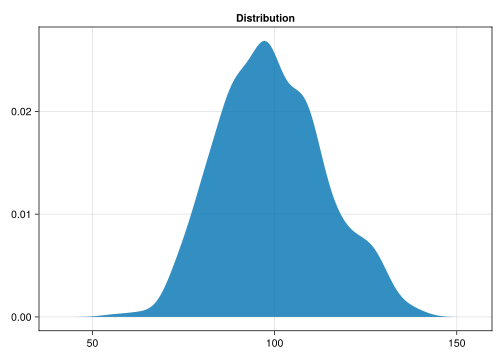

using Turing, Distributions, Random
using Makie
# Random sample from a Normal(μ=100, σ=15)
iq = rand(Normal(100, 15), 500)1 Fundamentals of Bayesian Modeling in Julia

1.1 Brief Intro to Julia and Turing
Goal is to teach just enough so that the reader understands the code. We won’t be discussing things like plotting (as it highly depends on the package used).
1.1.1 Installing Julia and Packages
TODO.
1.1.2 Julia Basics
Notable Differences with Python and R
These are the most common sources of confusion and errors for newcomers to Julia:
- 1-indexing: Similarly to R, Julia uses 1-based indexing, which means that the first element of a vector is
x[1](notx[0]as in Python). - Positional; Keyword arguments: Julia functions makes a clear distinction between positional and keyword arguments, and both are often separated by
;. Positional arguments are typically passed without a name, while keyword arguments must be named (e.g.,scatter(0, 0; color=:red)). Some functions might look likesomefunction(; arg1=val1, arg2=val2). - Symbols: Some arguments are prefixed with
:(e.g.,:redinscatter(0, 0; color=:red)). These symbols are like character strings that are not manipulable (there are more efficient). - Explicit vectorization: Julia does not vectorize operations by default. You need to use a dot
.in front of functions and operators to have it apply element by element. For example,sin.([0, 1, 2])will apply thesin()function to each element of its vector. - In-place operations: Julia has a strong emphasis on performance, and in-place operations are often used to avoid unnecessary memory allocations. When functions modify their input “in-place” (without returns), a band
!is used. For example, assumingx = [0](1-element vector containing 0),push!(x, 2)will modifyxin place (it is equivalent tox = push(x, 2)). - Macros: Some functions start with
@. These are called macros and are used to manipulate the code before it is run. For example,@timewill measure the time it takes to run the code that follows. - Unicode: Julia is a modern language to supports unicode characters, which are used a lot for mathematical operations. You can get the mu
μcharacter by typing\muand pressingTAB.
1.1.3 Generate Data from Normal Distribution
Code
fig = Figure()
ax = Axis(fig[1, 1], title="Distribution")
density!(ax, iq)
fig┌ Warning: Found `resolution` in the theme when creating a `Scene`. The `resolution` keyword for `Scene`s and `Figure`s has been deprecated. Use `Figure(; size = ...` or `Scene(; size = ...)` instead, which better reflects that this is a unitless size and not a pixel resolution. The key could also come from `set_theme!` calls or related theming functions.
└ @ Makie C:\Users\domma\.julia\packages\Makie\VRavR\src\scenes.jl:220
1.1.4 Recover Distribution Parameters with Turing
@model function model_gaussian(x)
# Priors
μ ~ Uniform(0, 200)
σ ~ Uniform(0, 30)
# Check against each datapoint
for i in 1:length(x)
x[i] ~ Normal(μ, σ)
end
end
fit_gaussian = model_gaussian(iq)
chain_gaussian = sample(fit_gaussian, NUTS(), 400)Inspecting the chain variable will show various posterior statistics (including the mean, standard deviation, and diagnostic indices).
chain_gaussianChains MCMC chain (400×14×1 Array{Float64, 3}):
Iterations = 201:1:600
Number of chains = 1
Samples per chain = 400
Wall duration = 8.8 seconds
Compute duration = 8.8 seconds
parameters = μ, σ
internals = lp, n_steps, is_accept, acceptance_rate, log_density, hamiltonian_energy, hamiltonian_energy_error, max_hamiltonian_energy_error, tree_depth, numerical_error, step_size, nom_step_size
Summary Statistics
parameters mean std mcse ess_bulk ess_tail rhat e ⋯
Symbol Float64 Float64 Float64 Float64 Float64 Float64 ⋯
μ 99.2403 0.6727 0.0333 414.3604 324.9996 0.9993 ⋯
σ 14.4973 0.4440 0.0187 561.5709 284.5407 0.9976 ⋯
1 column omitted
Quantiles
parameters 2.5% 25.0% 50.0% 75.0% 97.5%
Symbol Float64 Float64 Float64 Float64 Float64
μ 97.9096 98.7663 99.2552 99.7769 100.4228
σ 13.6853 14.1811 14.5066 14.7917 15.3761
For the purpose of this book, we will mostly focus on the 95% Credible Interval (CI), and we will assume that a parameter is “significant” if its CI does not include 0.
# Summary (95% CI)
hpd(chain_gaussian)HPD parameters lower upper Symbol Float64 Float64 μ 97.8594 100.3178 σ 13.5687 15.2885
1.2 Linear Models
Understand what the parameters mean (intercept, slopes, sigma).
1.3 Boostrapping
Introduce concepts related to pseudo-posterior distribution description
1.4 Hierarchical Models
Simpson’s paradox, random effects, how to leverage them to model interindividual differences
1.5 Bayesian estimation
introduce Bayesian estimation and priors over parameters
1.6 Bayesian mixed linear regression
put everything together